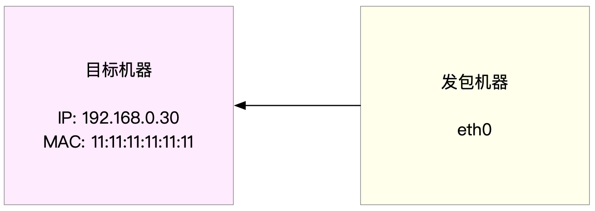
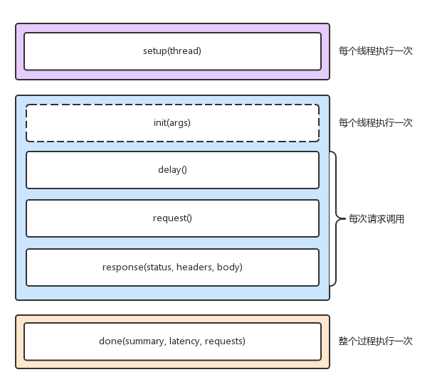

- 00 开篇词 别再让Linux性能问题成为你的绊脚石.md.html
- 01 如何学习Linux性能优化？.md.html
- 02 基础篇：到底应该怎么理解“平均负载”？.md.html
- 03 基础篇：经常说的 CPU 上下文切换是什么意思？（上）.md.html
- 04 基础篇：经常说的 CPU 上下文切换是什么意思？（下）.md.html
- 05 基础篇：某个应用的CPU使用率居然达到100%，我该怎么办？.md.html
- 06 案例篇：系统的 CPU 使用率很高，但为啥却找不到高 CPU 的应用？.md.html
- 07 案例篇：系统中出现大量不可中断进程和僵尸进程怎么办？（上）.md.html
- 08 案例篇：系统中出现大量不可中断进程和僵尸进程怎么办？（下）.md.html
- 09 基础篇：怎么理解Linux软中断？.md.html
- 10 案例篇：系统的软中断CPU使用率升高，我该怎么办？.md.html
- 11 套路篇：如何迅速分析出系统CPU的瓶颈在哪里？.md.html
- 12 套路篇：CPU 性能优化的几个思路.md.html
- 13 答疑（一）：无法模拟出 RES 中断的问题，怎么办？.md.html
- 14 答疑（二）：如何用perf工具分析Java程序？.md.html
- 15 基础篇：Linux内存是怎么工作的？.md.html
- 16 基础篇：怎么理解内存中的Buffer和Cache？.md.html
- 17 案例篇：如何利用系统缓存优化程序的运行效率？.md.html
- 18 案例篇：内存泄漏了，我该如何定位和处理？.md.html
- 19 案例篇：为什么系统的Swap变高了（上）.md.html
- 20 案例篇：为什么系统的Swap变高了？（下）.md.html
- 21 套路篇：如何“快准狠”找到系统内存的问题？.md.html
- 22 答疑（三）：文件系统与磁盘的区别是什么？.md.html
- 23 基础篇：Linux 文件系统是怎么工作的？.md.html
- 24 基础篇：Linux 磁盘I_O是怎么工作的（上）.md.html
- 25 基础篇：Linux 磁盘I_O是怎么工作的（下）.md.html
- 26 案例篇：如何找出狂打日志的“内鬼”？.md.html
- 27 案例篇：为什么我的磁盘I_O延迟很高？.md.html
- 28 案例篇：一个SQL查询要15秒，这是怎么回事？.md.html
- 29 案例篇：Redis响应严重延迟，如何解决？.md.html
- 30 套路篇：如何迅速分析出系统I_O的瓶颈在哪里？.md.html
- 31 套路篇：磁盘 I_O 性能优化的几个思路.md.html
- 32 答疑（四）：阻塞、非阻塞 I_O 与同步、异步 I_O 的区别和联系.md.html
- 33 关于 Linux 网络，你必须知道这些（上）.md.html
- 34 关于 Linux 网络，你必须知道这些（下）.md.html
- 35 基础篇：C10K 和 C1000K 回顾.md.html
- 36 套路篇：怎么评估系统的网络性能？.md.html
- 37 案例篇：DNS 解析时快时慢，我该怎么办？.md.html
- 38 案例篇：怎么使用 tcpdump 和 Wireshark 分析网络流量？.md.html
- 39 案例篇：怎么缓解 DDoS 攻击带来的性能下降问题？.md.html
- 40 案例篇：网络请求延迟变大了，我该怎么办？.md.html
- 41 案例篇：如何优化 NAT 性能？（上）.md.html
- 42 案例篇：如何优化 NAT 性能？（下）.md.html
- 43 套路篇：网络性能优化的几个思路（上）.md.html
- 44 套路篇：网络性能优化的几个思路（下）.md.html
- 45 答疑（五）：网络收发过程中，缓冲区位置在哪里？.md.html
- 46 案例篇：为什么应用容器化后，启动慢了很多？.md.html
- 47 案例篇：服务器总是时不时丢包，我该怎么办？（上）.md.html
- 48 案例篇：服务器总是时不时丢包，我该怎么办？（下）.md.html
- 49 案例篇：内核线程 CPU 利用率太高，我该怎么办？.md.html
- 50 案例篇：动态追踪怎么用？（上）.md.html
- 51 案例篇：动态追踪怎么用？（下）.md.html
- 52 案例篇：服务吞吐量下降很厉害，怎么分析？.md.html
- 53 套路篇：系统监控的综合思路.md.html
- 54 套路篇：应用监控的一般思路.md.html
- 55 套路篇：分析性能问题的一般步骤.md.html
- 56 套路篇：优化性能问题的一般方法.md.html
- 57 套路篇：Linux 性能工具速查.md.html
- 58 答疑（六）：容器冷启动如何性能分析？.md.html
- 加餐（一） 书单推荐：性能优化和Linux 系统原理.md.html
- 加餐（二） 书单推荐：网络原理和 Linux 内核实现.md.html
- 用户故事 “半路出家 ”，也要顺利拿下性能优化！.md.html
- 用户故事 运维和开发工程师们怎么说？.md.html
- 结束语 愿你攻克性能难关.md.html
- 捐赠
36 套路篇：怎么评估系统的网络性能？
你好，我是倪朋飞。
上一节，我们回顾了经典的 C10K 和 C1000K 问题。简单回顾一下，C10K 是指如何单机同时处理 1 万个请求（并发连接1万）的问题，而 C1000K 则是单机支持处理 100 万个请求（并发连接100万）的问题。
I/O 模型的优化，是解决 C10K 问题的最佳良方。Linux 2.6 中引入的 epoll，完美解决了 C10K 的问题，并一直沿用至今。今天的很多高性能网络方案，仍都基于 epoll。
自然，随着互联网技术的普及，催生出更高的性能需求。从 C10K 到 C100K，我们只需要增加系统的物理资源，就可以满足要求；但从 C100K 到 C1000K ，光增加物理资源就不够了。
这时，就要对系统的软硬件进行统一优化，从硬件的中断处理，到网络协议栈的文件描述符数量、连接状态跟踪、缓存队列，再到应用程序的工作模型等的整个网络链路，都需要深入优化。
再进一步，要实现 C10M，就不是增加物理资源、调优内核和应用程序可以解决的问题了。这时内核中冗长的网络协议栈就成了最大的负担。
需要用 XDP 方式，在内核协议栈之前，先处理网络包。
或基于 DPDK ，直接跳过网络协议栈，在用户空间通过轮询的方式处理。
其中，DPDK 是目前最主流的高性能网络方案，不过，这需要能支持 DPDK 的网卡配合使用。
当然，实际上，在大多数场景中，我们并不需要单机并发 1000 万请求。通过调整系统架构，把请求分发到多台服务器中并行处理，才是更简单、扩展性更好的方案。
不过，这种情况下，就需要我们评估系统的网络性能，以便考察系统的处理能力，并为容量规划提供基准数据。
那么，到底该怎么评估网络的性能呢？今天，我就带你一起来看看这个问题。
性能指标回顾
在评估网络性能前，我们先来回顾一下，衡量网络性能的指标。在 Linux 网络基础篇中，我们曾经说到，带宽、吞吐量、延时、PPS 等，都是最常用的网络性能指标。还记得它们的具体含义吗？你可以先思考一下，再继续下面的内容。
首先，带宽，表示链路的最大传输速率，单位是 b/s（比特/秒）。在你为服务器选购网卡时，带宽就是最核心的参考指标。常用的带宽有 1000M、10G、40G、100G 等。
第二，吞吐量，表示没有丢包时的最大数据传输速率，单位通常为 b/s （比特/秒）或者 B/s（字节/秒）。吞吐量受带宽的限制，吞吐量/带宽也就是该网络链路的使用率。
第三，延时，表示从网络请求发出后，一直到收到远端响应，所需要的时间延迟。这个指标在不同场景中可能会有不同的含义。它可以表示建立连接需要的时间（比如 TCP 握手延时），或者一个数据包往返所需时间（比如 RTT）。
最后，PPS，是 Packet Per Second（包/秒）的缩写，表示以网络包为单位的传输速率。PPS 通常用来评估网络的转发能力，而基于 Linux 服务器的转发，很容易受到网络包大小的影响（交换机通常不会受到太大影响，即交换机可以线性转发）。
这四个指标中，带宽跟物理网卡配置是直接关联的。一般来说，网卡确定后，带宽也就确定了（当然，实际带宽会受限于整个网络链路中最小的那个模块）。
另外，你可能在很多地方听说过“网络带宽测试”，这里测试的实际上不是带宽，而是网络吞吐量。Linux 服务器的网络吞吐量一般会比带宽小，而对交换机等专门的网络设备来说，吞吐量一般会接近带宽。
最后的 PPS，则是以网络包为单位的网络传输速率，通常用在需要大量转发的场景中。而对 TCP 或者 Web 服务来说，更多会用并发连接数和每秒请求数（QPS，Query per Second）等指标，它们更能反应实际应用程序的性能。
网络基准测试
熟悉了网络的性能指标后，接下来，我们再来看看，如何通过性能测试来确定这些指标的基准值。
你可以先思考一个问题。我们已经知道，Linux 网络基于 TCP/IP 协议栈，而不同协议层的行为显然不同。那么，测试之前，你应该弄清楚，你要评估的网络性能，究竟属于协议栈的哪一层？换句话说，你的应用程序基于协议栈的哪一层呢？
根据前面学过的 TCP/IP 协议栈的原理，这个问题应该不难回答。比如：
基于 HTTP 或者 HTTPS 的 Web 应用程序，显然属于应用层，需要我们测试 HTTP/HTTPS 的性能；
而对大多数游戏服务器来说，为了支持更大的同时在线人数，通常会基于 TCP 或 UDP ，与客户端进行交互，这时就需要我们测试 TCP/UDP 的性能；
当然，还有一些场景，是把 Linux 作为一个软交换机或者路由器来用的。这种情况下，你更关注网络包的处理能力（即 PPS），重点关注网络层的转发性能。
接下来，我就带你从下往上，了解不同协议层的网络性能测试方法。不过要注意，低层协议是其上的各层网络协议的基础。自然，低层协议的性能，也就决定了高层的网络性能。
注意，以下所有的测试方法，都需要两台 Linux 虚拟机。其中一台，可以当作待测试的目标机器；而另一台，则可以当作正在运行网络服务的客户端，用来运行测试工具。
各协议层的性能测试
转发性能
我们首先来看，网络接口层和网络层，它们主要负责网络包的封装、寻址、路由以及发送和接收。在这两个网络协议层中，每秒可处理的网络包数 PPS，就是最重要的性能指标。特别是 64B 小包的处理能力，值得我们特别关注。那么，如何来测试网络包的处理能力呢？
说到网络包相关的测试，你可能会觉得陌生。不过，其实在专栏开头的 CPU 性能篇中，我们就接触过一个相关工具，也就是软中断案例中的 hping3。
在那个案例中，hping3 作为一个 SYN 攻击的工具来使用。实际上， hping3 更多的用途，是作为一个测试网络包处理能力的性能工具。
今天我再来介绍另一个更常用的工具，Linux 内核自带的高性能网络测试工具 pktgen。pktgen 支持丰富的自定义选项，方便你根据实际需要构造所需网络包，从而更准确地测试出目标服务器的性能。
不过，在 Linux 系统中，你并不能直接找到 pktgen 命令。因为 pktgen 作为一个内核线程来运行，需要你加载 pktgen 内核模块后，再通过 /proc 文件系统来交互。下面就是 pktgen 启动的两个内核线程和 /proc 文件系统的交互文件：
$ modprobe pktgen
$ ps -ef | grep pktgen | grep -v grep
root 26384 2 0 06:17 ? 00:00:00 [kpktgend_0]
root 26385 2 0 06:17 ? 00:00:00 [kpktgend_1]
$ ls /proc/net/pktgen/
kpktgend_0 kpktgend_1 pgctrl
pktgen 在每个 CPU 上启动一个内核线程，并可以通过 /proc/net/pktgen 下面的同名文件，跟这些线程交互；而 pgctrl 则主要用来控制这次测试的开启和停止。
如果 modprobe 命令执行失败，说明你的内核没有配置 CONFIG_NET_PKTGEN 选项。这就需要你配置 pktgen 内核模块（即 CONFIG_NET_PKTGEN=m）后，重新编译内核，才可以使用。
在使用 pktgen 测试网络性能时，需要先给每个内核线程 kpktgend_X 以及测试网卡，配置 pktgen 选项，然后再通过 pgctrl 启动测试。
以发包测试为例，假设发包机器使用的网卡是 eth0，而目标机器的 IP 地址为 192.168.0.30，MAC 地址为 11:11:11:11:11:11。

接下来，就是一个发包测试的示例。
# 定义一个工具函数，方便后面配置各种测试选项
function pgset() {
local result
echo $1 > $PGDEV
result=`cat $PGDEV | fgrep "Result: OK:"`
if [ "$result" = "" ]; then
cat $PGDEV | fgrep Result:
fi
}
# 为0号线程绑定eth0网卡
PGDEV=/proc/net/pktgen/kpktgend_0
pgset "rem_device_all" # 清空网卡绑定
pgset "add_device eth0" # 添加eth0网卡
# 配置eth0网卡的测试选项
PGDEV=/proc/net/pktgen/eth0
pgset "count 1000000" # 总发包数量
pgset "delay 5000" # 不同包之间的发送延迟(单位纳秒)
pgset "clone_skb 0" # SKB包复制
pgset "pkt_size 64" # 网络包大小
pgset "dst 192.168.0.30" # 目的IP
pgset "dst_mac 11:11:11:11:11:11" # 目的MAC
# 启动测试
PGDEV=/proc/net/pktgen/pgctrl
pgset "start"
稍等一会儿，测试完成后，结果可以从 /proc 文件系统中获取。通过下面代码段中的内容，我们可以查看刚才的测试报告：
$ cat /proc/net/pktgen/eth0
Params: count 1000000 min_pkt_size: 64 max_pkt_size: 64
frags: 0 delay: 0 clone_skb: 0 ifname: eth0
flows: 0 flowlen: 0
...
Current:
pkts-sofar: 1000000 errors: 0
started: 1534853256071us stopped: 1534861576098us idle: 70673us
...
Result: OK: 8320027(c8249354+d70673) usec, 1000000 (64byte,0frags)
120191pps 61Mb/sec (61537792bps) errors: 0
你可以看到，测试报告主要分为三个部分：
第一部分的 Params 是测试选项；
第二部分的 Current 是测试进度，其中， packts so far（pkts-sofar）表示已经发送了 100 万个包，也就表明测试已完成。
第三部分的 Result 是测试结果，包含测试所用时间、网络包数量和分片、PPS、吞吐量以及错误数。
根据上面的结果，我们发现，PPS 为 12 万，吞吐量为 61 Mb/s，没有发生错误。那么，12 万的 PPS 好不好呢？
作为对比，你可以计算一下千兆交换机的 PPS。交换机可以达到线速（满负载时，无差错转发），它的 PPS 就是 1000Mbit 除以以太网帧的大小，即 1000Mbps/((64+20)*8bit) = 1.5 Mpps（其中，20B 为以太网帧前导和帧间距的大小）。
你看，即使是千兆交换机的 PPS，也可以达到 150 万 PPS，比我们测试得到的 12 万大多了。所以，看到这个数值你并不用担心，现在的多核服务器和万兆网卡已经很普遍了，稍做优化就可以达到数百万的 PPS。而且，如果你用了上节课讲到的 DPDK 或 XDP ，还能达到千万数量级。
TCP/UDP 性能
掌握了 PPS 的测试方法，接下来，我们再来看TCP 和 UDP 的性能测试方法。说到 TCP 和 UDP 的测试，我想你已经很熟悉了，甚至可能一下子就能想到相应的测试工具，比如 iperf 或者 netperf。
特别是现在的云计算时代，在你刚拿到一批虚拟机时，首先要做的，应该就是用 iperf ，测试一下网络性能是否符合预期。
iperf 和 netperf 都是最常用的网络性能测试工具，测试 TCP 和 UDP 的吞吐量。它们都以客户端和服务器通信的方式，测试一段时间内的平均吞吐量。
接下来，我们就以 iperf 为例，看一下 TCP 性能的测试方法。目前，iperf 的最新版本为 iperf3，你可以运行下面的命令来安装：
# Ubuntu
apt-get install iperf3
# CentOS
yum install iperf3
然后，在目标机器上启动 iperf 服务端：
# -s表示启动服务端，-i表示汇报间隔，-p表示监听端口
$ iperf3 -s -i 1 -p 10000
接着，在另一台机器上运行 iperf 客户端，运行测试：
# -c表示启动客户端，192.168.0.30为目标服务器的IP
# -b表示目标带宽(单位是bits/s)
# -t表示测试时间
# -P表示并发数，-p表示目标服务器监听端口
$ iperf3 -c 192.168.0.30 -b 1G -t 15 -P 2 -p 10000
稍等一会儿（15秒）测试结束后，回到目标服务器，查看 iperf 的报告：
[ ID] Interval Transfer Bandwidth
...
[SUM] 0.00-15.04 sec 0.00 Bytes 0.00 bits/sec sender
[SUM] 0.00-15.04 sec 1.51 GBytes 860 Mbits/sec receiver
最后的 SUM 行就是测试的汇总结果，包括测试时间、数据传输量以及带宽等。按照发送和接收，这一部分又分为了 sender 和 receiver 两行。
从测试结果你可以看到，这台机器 TCP 接收的带宽（吞吐量）为 860 Mb/s， 跟目标的 1Gb/s 相比，还是有些差距的。
HTTP 性能
从传输层再往上，到了应用层。有的应用程序，会直接基于 TCP 或 UDP 构建服务。当然，也有大量的应用，基于应用层的协议来构建服务，HTTP 就是最常用的一个应用层协议。比如，常用的 Apache、Nginx 等各种 Web 服务，都是基于 HTTP。
要测试 HTTP 的性能，也有大量的工具可以使用，比如 ab、webbench 等，都是常用的 HTTP 压力测试工具。其中，ab 是 Apache 自带的 HTTP 压测工具，主要测试 HTTP 服务的每秒请求数、请求延迟、吞吐量以及请求延迟的分布情况等。
运行下面的命令，你就可以安装 ab 工具：
# Ubuntu
$ apt-get install -y apache2-utils
# CentOS
$ yum install -y httpd-tools
接下来，在目标机器上，使用 Docker 启动一个 Nginx 服务，然后用 ab 来测试它的性能。首先，在目标机器上运行下面的命令：
$ docker run -p 80:80 -itd nginx
而在另一台机器上，运行 ab 命令，测试 Nginx 的性能：
# -c表示并发请求数为1000，-n表示总的请求数为10000
$ ab -c 1000 -n 10000 http://192.168.0.30/
...
Server Software: nginx/1.15.8
Server Hostname: 192.168.0.30
Server Port: 80
...
Requests per second: 1078.54 [#/sec] (mean)
Time per request: 927.183 [ms] (mean)
Time per request: 0.927 [ms] (mean, across all concurrent requests)
Transfer rate: 890.00 [Kbytes/sec] received
Connection Times (ms)
min mean[+/-sd] median max
Connect: 0 27 152.1 1 1038
Processing: 9 207 843.0 22 9242
Waiting: 8 207 843.0 22 9242
Total: 15 233 857.7 23 9268
Percentage of the requests served within a certain time (ms)
50% 23
66% 24
75% 24
80% 26
90% 274
95% 1195
98% 2335
99% 4663
100% 9268 (longest request)
可以看到，ab 的测试结果分为三个部分，分别是请求汇总、连接时间汇总还有请求延迟汇总。以上面的结果为例，我们具体来看。
在请求汇总部分，你可以看到：
Requests per second 为 1074；
每个请求的延迟（Time per request）分为两行，第一行的 927 ms 表示平均延迟，包括了线程运行的调度时间和网络请求响应时间，而下一行的 0.927ms ，则表示实际请求的响应时间；
Transfer rate 表示吞吐量（BPS）为 890 KB/s。
连接时间汇总部分，则是分别展示了建立连接、请求、等待以及汇总等的各类时间，包括最小、最大、平均以及中值处理时间。
最后的请求延迟汇总部分，则给出了不同时间段内处理请求的百分比，比如， 90% 的请求，都可以在 274ms 内完成。
应用负载性能
当你用 iperf 或者 ab 等测试工具，得到 TCP、HTTP 等的性能数据后，这些数据是否就能表示应用程序的实际性能呢？我想，你的答案应该是否定的。
比如，你的应用程序基于 HTTP 协议，为最终用户提供一个 Web 服务。这时，使用 ab 工具，可以得到某个页面的访问性能，但这个结果跟用户的实际请求，很可能不一致。因为用户请求往往会附带着各种各种的负载（payload），而这些负载会影响 Web 应用程序内部的处理逻辑，从而影响最终性能。
那么，为了得到应用程序的实际性能，就要求性能工具本身可以模拟用户的请求负载，而iperf、ab 这类工具就无能为力了。幸运的是，我们还可以用 wrk、TCPCopy、Jmeter 或者 LoadRunner 等实现这个目标。
以 wrk 为例，它是一个 HTTP 性能测试工具，内置了 LuaJIT，方便你根据实际需求，生成所需的请求负载，或者自定义响应的处理方法。
wrk 工具本身不提供 yum 或 apt 的安装方法，需要通过源码编译来安装。比如，你可以运行下面的命令，来编译和安装 wrk：
$ https://github.com/wg/wrk
$ cd wrk
$ apt-get install build-essential -y
$ make
$ sudo cp wrk /usr/local/bin/
wrk 的命令行参数比较简单。比如，我们可以用 wrk ，来重新测一下前面已经启动的 Nginx 的性能。
# -c表示并发连接数1000，-t表示线程数为2
$ wrk -c 1000 -t 2 http://192.168.0.30/
Running 10s test @ http://192.168.0.30/
2 threads and 1000 connections
Thread Stats Avg Stdev Max +/- Stdev
Latency 65.83ms 174.06ms 1.99s 95.85%
Req/Sec 4.87k 628.73 6.78k 69.00%
96954 requests in 10.06s, 78.59MB read
Socket errors: connect 0, read 0, write 0, timeout 179
Requests/sec: 9641.31
Transfer/sec: 7.82MB
这里使用 2 个线程、并发 1000 连接，重新测试了 Nginx 的性能。你可以看到，每秒请求数为 9641，吞吐量为 7.82MB，平均延迟为 65ms，比前面 ab 的测试结果要好很多。
这也说明，性能工具本身的性能，对性能测试也是至关重要的。不合适的性能工具，并不能准确测出应用程序的最佳性能。
当然，wrk 最大的优势，是其内置的 LuaJIT，可以用来实现复杂场景的性能测试。wrk 在调用 Lua 脚本时，可以将 HTTP 请求分为三个阶段，即 setup、running、done，如下图所示：

（图片来自网易云博客）
比如，你可以在 setup 阶段，为请求设置认证参数（来自于 wrk 官方示例）：
-- example script that demonstrates response handling and
-- retrieving an authentication token to set on all future
-- requests
token = nil
path = "/authenticate"
request = function()
return wrk.format("GET", path)
end
response = function(status, headers, body)
if not token and status == 200 then
token = headers["X-Token"]
path = "/resource"
wrk.headers["X-Token"] = token
end
end
而在执行测试时，通过 -s 选项，执行脚本的路径：
$ wrk -c 1000 -t 2 -s auth.lua http://192.168.0.30/
wrk 需要你用 Lua 脚本，来构造请求负载。这对于大部分场景来说，可能已经足够了 。不过，它的缺点也正是，所有东西都需要代码来构造，并且工具本身不提供 GUI 环境。
像 Jmeter 或者 LoadRunner（商业产品），则针对复杂场景提供了脚本录制、回放、GUI 等更丰富的功能，使用起来也更加方便。
小结
今天，我带你一起回顾了网络的性能指标，并学习了网络性能的评估方法。
性能评估是优化网络性能的前提，只有在你发现网络性能瓶颈时，才需要进行网络性能优化。根据 TCP/IP 协议栈的原理，不同协议层关注的性能重点不完全一样，也就对应不同的性能测试方法。比如，
在应用层，你可以使用 wrk、Jmeter 等模拟用户的负载，测试应用程序的每秒请求数、处理延迟、错误数等；
而在传输层，则可以使用 iperf 等工具，测试 TCP 的吞吐情况；
再向下，你还可以用 Linux 内核自带的 pktgen ，测试服务器的 PPS。
由于低层协议是高层协议的基础。所以，一般情况下，我们需要从上到下，对每个协议层进行性能测试，然后根据性能测试的结果，结合 Linux 网络协议栈的原理，找出导致性能瓶颈的根源，进而优化网络性能。
思考
最后，我想请你来聊一聊。
你是如何评估网络性能的？
在评估网络性能时，你会从哪个协议层、选择哪些指标，作为性能测试最核心的目标？
你又会用哪些工具，测试并分析网络的性能呢？
你可以结合今天学到的网络知识，总结自己的思路。
欢迎在留言区和我讨论，也欢迎你把这篇文章分享给你的同事、朋友。我们一起在实战中演练，在交流中进步。
© 2019 - 2023 Liangliang Lee. Powered by gin and hexo-theme-book.